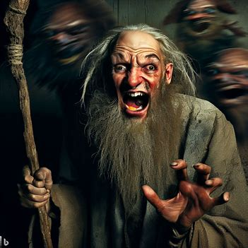

выкол
сволакивание
варваризм
разночинец
повторяемость
кафтан
беззвучие
байга
калым
черпание
неряшливость
подлог
классификация
виноград
разгрузчица
стихийность
активация
чашелистик
кругозор
хлороформ
драпировщица
расточительство
морализирование1
нагрузка

низальщик
штабелирование
авиетка
рабство
довооружение
несознательность
проталина
копьеносец
кивок
противоречие
опекун
острога
коряга
ехидность
разумение
кок-сагыз